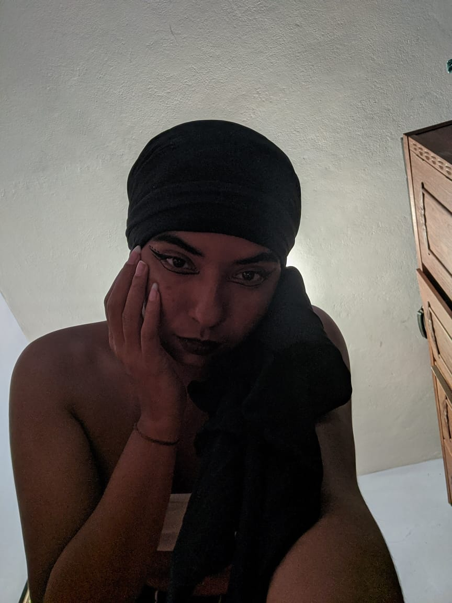

Página Home
|  |
Olá, gostaria de dar as boas-vindas a todos e todas!
Me chamo Amanda Otone do Nascimento, tenho 21 anos e sou natural de Belo Horizonte - MG.
Atualmente estou cursando o 4º período do curso de Física na UFMG, tenho como objetivo me graduar
em licenciatura e posteriormente pedir continuidade para o bacharelado, para poder trabalhar com ambas
as vertentes da Física. |
|---|
|
Fiquei muito animada com a turma, principalmente, por ser uma turma composta unicamente por mulheres, levando-se em conta que esse mercado de trabalho é composto majoritariamente por homens. Desse modo, ter a chance de ingressar nesse mercado com tantas mulheres a minha volta logo de cara é muito animador. E também, o fato de termos aula com um professor que já está nesse mercado a algum tempo ajuda bastante, pois, obtemos dicas muito importantes na hora de construir um site, como se relacionar com o cliente, quanto cobrar e até mesmo para sabermos o que esperar de forma realista ao começarmos a trabalhar na área. Além disso, temos uma aula por semana que nos ajuda a trabalhar e desenvolver as nossas Soft Skills, possibilitando que sejamos profissionais e pessoas mas tranquilas no dia a dia e ao nós relacionarmos com outras pessoas. |
|---|
|
Faz pouco tempo que demos início ao curso e ainda não conheço muito bem as minhas colegas de turma, principalmente por estarmos em um curso ead, então fica um pouco difícil falar sobre uma em especifico, mas, vou falar um pouco sobre a Debora Duarte. Ela parece ser uma pessoa chique, engraçada e atenciosa, sempre está no grupo ajudando como e quando pode, seja tirando dúvidas ou nos exercícios. Acho uma pena não poder conhecer todas pessoalmente, mas infelizmente é o necessário em meio a esses tempos. |
|---|
Beco Campinas - Belo Horizonte